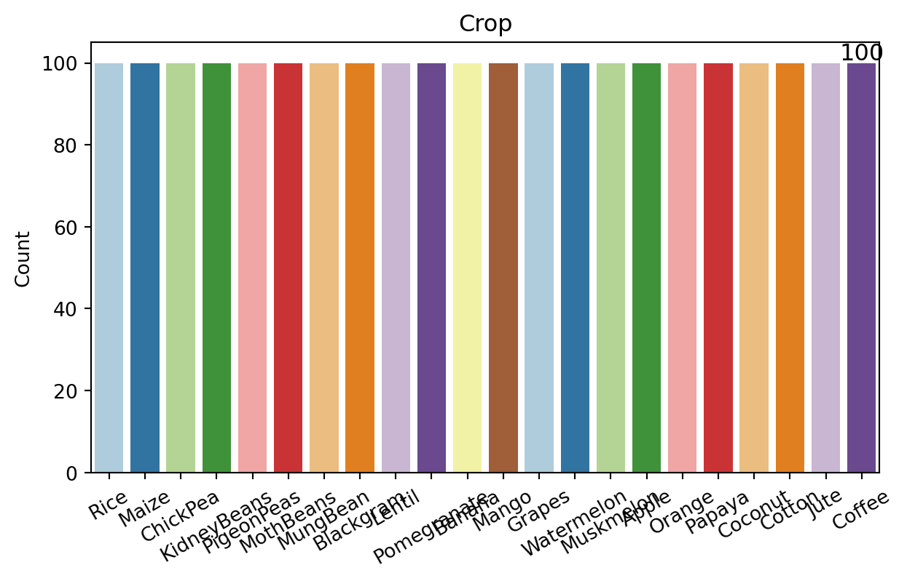

#Introduction We have a dataset that showcases what crop is best suited for a combination of different features(quantitatively) like Nitrogen, Phosphorus, Potassium and so on.
import pandas as pdimport matplotlib.pyplot as pltfrom matplotlib.gridspec import GridSpec, GridSpecFromSubplotSpecimport seaborn as sbimport numpy as npfile_path=r"C:\Users\subha\Desktop\AgriSage\Data\Crop_Recommendation.csv"raw_data= pd.read_csv (file_path)raw_data.info()target ='Crop'
def plot_counts(data, features, hue=None): n_cols =2 n_rows =int(np.ceil(len(features)/n_cols)) # Create figure fig, axes = plt.subplots(n_rows, n_cols, figsize=(16, 4*n_rows))# Flatten the axes array for easier indexing axes = axes.flatten()for i, feature inenumerate(features):#bar_container = axes[i].bar(df[feature].value_counts().index, df[feature].value_counts().values) sb.countplot( data = data, x = feature, palette ='Paired', hue = hue, ax = axes[i] )for p in axes[i].patches: label = p.get_height() x = p.get_x() + p.get_width() /2# Width of the plot y = p.get_height() # Height of the plot rotation =0if hue isnotNone: rotation =30# Rotate annotations by 30 degrees if hue is not None axes[i].annotate('{:.0f}'.format(label), (x, y), ha ='center', va ='center', size =12, xytext = (0, 5), textcoords ='offset points', rotation = rotation ) axes[i].set(ylabel='Count', title=feature, xlabel='') axes[i].tick_params(axis='x', rotation=30)# If the number of features is odd, remove the empty subplotiflen(features) %2!=0: fig.delaxes(axes[-1])plt.tight_layout()plt.show()plot_counts(raw_data, [target])
<Figure size 672x480 with 0 Axes>
C:\Users\subha\AppData\Local\Temp\ipykernel_15176\2661042048.py:12: FutureWarning:
Passing `palette` without assigning `hue` is deprecated and will be removed in v0.14.0. Assign the `x` variable to `hue` and set `legend=False` for the same effect.
sb.countplot(

The above figure helps us in a clear visualization of our data. 1) Quantification: We have 22 possible targets that is crops for our datset and since each crop has a 100 samples, we have 2200 samples. 2) Class Balance: The fact that each crop has an equal number of samples (100) suggests that the dataset is balanced. This is beneficial for training machine learning models as it can prevent bias towards any particular class. 3) Granularity: In a classification problem like the one presented here, having 100 samples per target allows for a detailed representation of each class. However, the number of samples is a subject to change after further EDA.
The above figures tells us that Phosphorus and Potassium have a high positive correation. This can be due to several underlying reasons related to soil chemistry, plant physiology, and farming practices. Here are some common reasons why these two nutrients might show correlation: 1) Soil Composition: Phosphorus (P) and potassium (K) availability in soil can be influenced by similar factors such as soil type, pH levels, and organic matter content. 2) Fertilizer Application: Farmers often apply fertilizers that contain both phosphorus and potassium together. This simultaneous application can lead to their concentrations being correlated in the soil. 3) Sampling and Analysis: Sometimes, the correlation observed could be due to the way samples are collected or analyzed. If samples are taken from similar locations or depths within a field, they may show similar nutrient profiles. 4) Environmental Factors: Environmental conditions such as rainfall, temperature, and humidity can affect the mobility and availability of both phosphorus and potassium in the soil. Similar environmental impacts can result in correlated values. In our datset since these factors would be same for a particular area, the correlation is understandable.
Highly correlated variables can adversely affect the performance of predictive models, particularly in regression and classification tasks: 1) It can lead to multicollinearity, where the coefficients become unstable and difficult to interpret in regression models. 2) It can also lead to OVERFITTING occurs when the model captures noise or random fluctuations rather than underlying patterns.